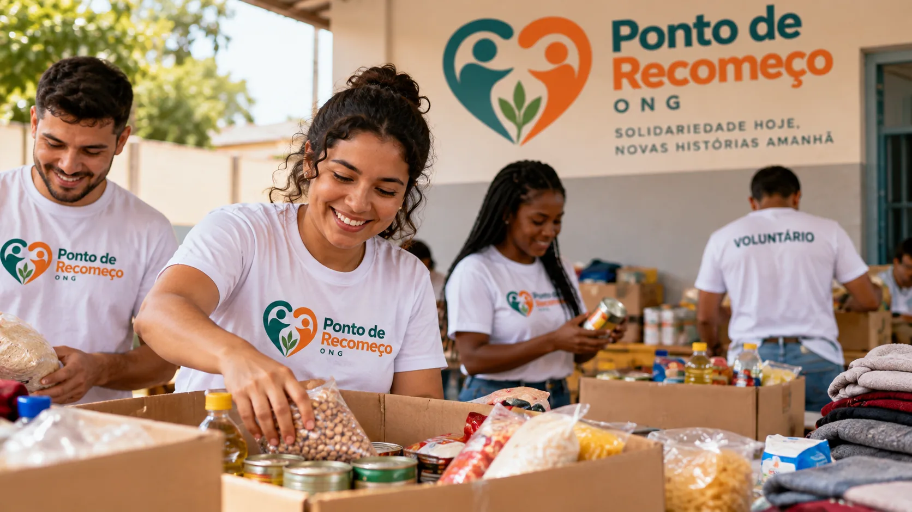

ONG Ponto de Recomeço
Quem Somos

A ONG Ponto de Recomeço realiza ações de apoio a famílias em situação de vulnerabilidade, por meio da arrecadação e distribuição de alimentos, roupas e itens de higiene.
Nossas Ações
Nossas ações contam com a participação de voluntários e doadores que ajudam na arrecadação, organização e distribuição das doações.
Entre em Contato
E-mail: contato@pontoderecomeco.org.br
Telefone: (11) 99999-9999